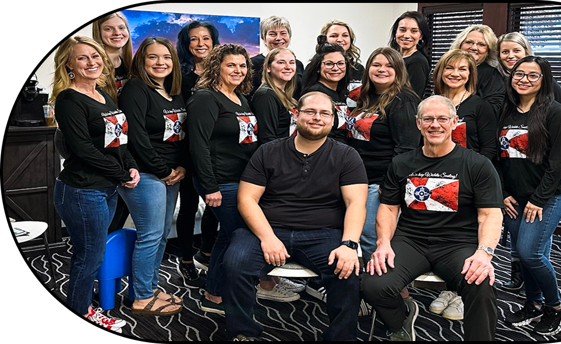

Care you can trust,
right here in Wichita, KS

Our Philosophy
When you have dental problems, you or your family need to turn to a dentist who listens and responds. Dr. Ted Mason, Dr. Debra Schmidt and Dr. Ranjit Ghanta have a combined 50 years of experience and can effectively diagnose and treat your needs. They are family dentists who counsel you on the best ways to maintain and improve your health. Our caring and friendly staff is here to give you the individualized attention you deserve.
Our doctors believes that you are better prepared to make decisions regarding your health and well-being when you are fully informed. That’s why we've included an extensive section on this web site covering cosmetic dentistry, sedation dentistry and dental diagnoses and treatments. We invite you to contact us with your questions at any time.
MEET THE DOCTORS
DR. TED MASON, D.S.S.
Graduated from Wichita State University in 1982 with Bachelor of Liberal Arts degree. Member of the Delta Upsilon Fraternity and Dean's Honor Roll.
Graduated Magna Cum Laude from the University of Missouri-Kansas City School of Dentistry in 1986. Recipient of the Outstanding Senior Award from the Academy of General Dentistry.
One of the first three clinicians in the U.S. to begin utilization of the advanced CEREC 3 CAD/CAM restorative system.
Currently a member of the Wichita District Dental Society, the Kansas Dental Society, The American Dental Association, Pierre Fauchard Society, and the Academy of General Dentistry.
Recipient of the Dentist of the Year award by the Wichita District Dental Society in 2010.
Alumni of the Dawson Center for Advanced Dental study and the American Orthodontic Society curriculum for general practitioners.
Recipient of the Good Apple Award from USD 259 for 22 years of continued volunteer service of school exams during Dental Health Month.
Certified in the Invisalign system and CPR.
Dr. Mason has volunteered his services the last 12 years for the Kansas Foundation of Dentistry for the Handicap.
Cosmetic consultant to the Miss Kansas pageant.
He and his wife Laurie have 6 children combined.
DR. ADAM COPPENBARGER, D.D.S.
My name is Dr. Adam Coppenbarger (Dr. C) and I graduated Magna Cum Laude from Wichita State University in 2014 with an undergraduate degree in General Studies Chemistry.
I completed my Doctor of Dental Surgery (DDS) with honors at the University of Missouri at Kansas City (UMKC) in 2020. I grew up in Mulvane, KS and am excited about coming back to the Wichita area.
Immediately following graduation from UMKC I was employed at Gracemed Health Clinic in Wichita as a General Dentist. In 2021 I moved to Salina, KS and practiced general dentistry at New Horizons Dental Care.
I worked there in a large group private practice setting for several months before leading a single doctor practice in Wellsville, KS. At this time, I provided comprehensive care to patients, including sedation and implant dentistry.
I am committed to continuing my education and staying current with the latest advancements in the art and science of dentistry.
I am always looking to advance my education in dentistry. I am driven by a genuine passion for improving smiles and overall health, and I prioritize a patient-centric approach. I believe in fostering a welcoming,
comfortable environment where patients feel heard, understood, and empowered in their dental decisions.
Beyond the clinic, I am actively involved in community outreach programs, volunteering, or providing education sessions to promote oral health awareness. I believe in giving back and striving to make a positive impact
beyond the confines of the practice. When not in the office, I enjoy sports, fishing, and value spending time with friends. I find inspiration in helping others, which also guides my approach to dentistry.
I look forward to working alongside Dr. Ted and meeting each and every one of you.